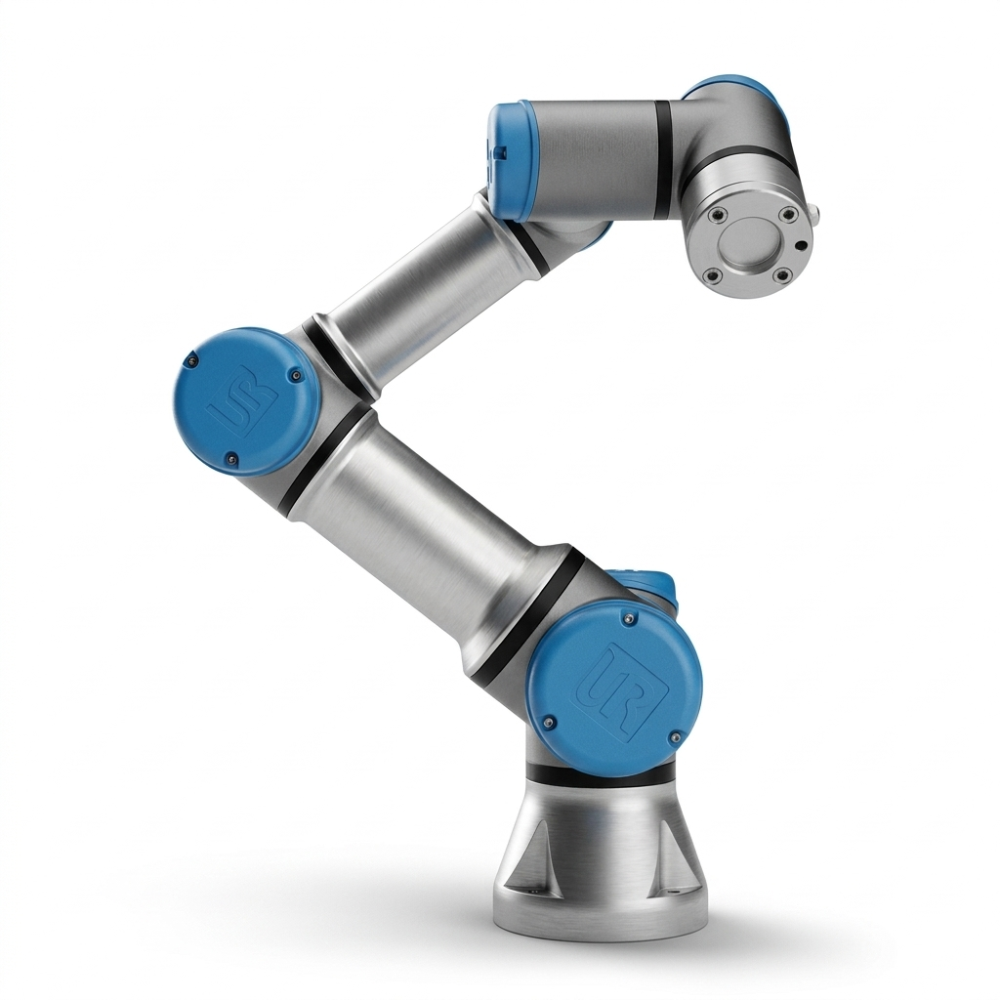
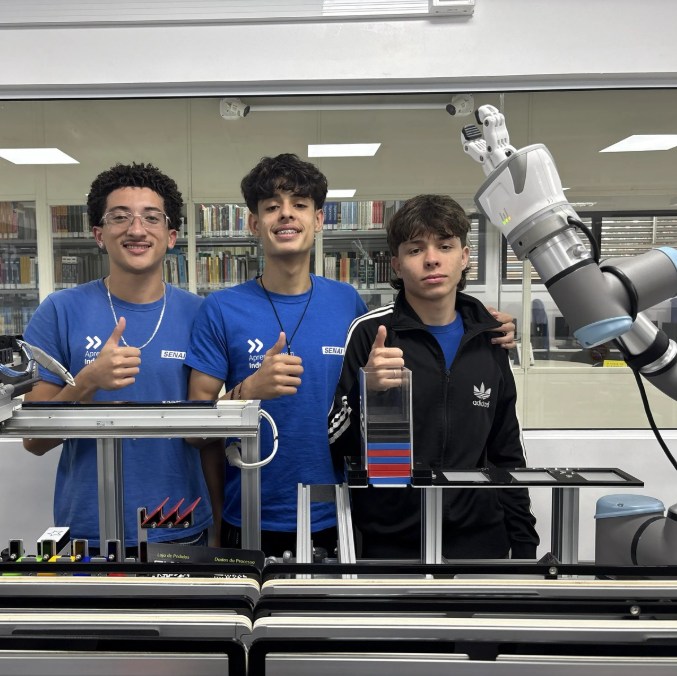
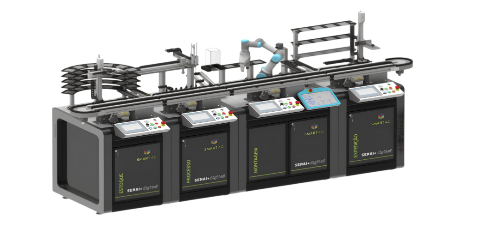

Mundo SENAI Bancada de montagem
Este site foi criado com o objetivo de apresentar a Bancada Smart 4.0, equipamento que estudamos e conhecemos ao longo das aulas de automação industrial.
Durante esse período, aprendemos sobre o funcionamento da bancada, seus equipamentos e a integração entre robótica, sensores, CLP e outros sistemas de automação. Aqui reunimos parte desse conhecimento para explicar como esses elementos trabalham juntos em um processo industrial.
O que aprendemos
Ao longo das aulas, tivemos contato com diferentes conceitos de automação e pudemos entender na prática como os equipamentos de uma célula industrial trabalham em conjunto.
A bancada
A Bancada Smart 4.0 reúne diferentes tecnologias utilizadas na indústria, permitindo observar e estudar um processo automatizado.
Nosso objetivo
Reunir neste site o que aprendemos e apresentar de forma simples como a bancada funciona e como seus principais componentes se integram durante o processo.
O projetoComo funciona
O braço pega peças e encaixa em sequência. A turma programa a velocidade, o caminho e os pontos de parada.
O objetivo é simular, com segurança, uma linha de montagem de verdade.
UR3e na Bancada Smart 4.0
Na Bancada Smart 4.0, o UR3e atua como o manipulador robótico da célula. Ele trabalha integrado aos sensores, CLP, atuadores e outros equipamentos, formando um sistema de automação industrial. Dessa forma, o robô recebe informações do sistema e executa as ações programadas.

Função do UR3e
O robô é utilizado principalmente para movimentar e montar componentes. Ele pode pegar peças, transportá-las e posicioná-las em locais específicos, realizando tarefas que exigem precisão e repetibilidade.
Integração com o sistema
O UR3e não trabalha sozinho. Sensores identificam as condições do processo e o sistema de controle envia as informações necessárias para que o robô execute cada etapa no momento correto.
Início do processo
O ciclo começa quando os sensores identificam que uma peça está disponível ou que uma nova etapa pode ser iniciada. A partir disso, o sistema libera o robô para executar a sequência programada.
Movimentação
O UR3e utiliza seus seis eixos para alcançar diferentes posições. Ele se movimenta até o ponto de coleta, aciona a ferramenta instalada em sua extremidade e pega o componente.
Montagem e repetição
Depois de pegar a peça, o robô a transporta até o local determinado e realiza a operação de montagem. Ao terminar, libera o componente e pode retornar à posição inicial ou iniciar uma nova etapa.

EquipeQuem fez este site
- C Carlos
- M Miguel Alves
- M Miguel da Silva
ContatoFale com a gente
Quer saber mais sobre a bancada? Escreva pra gente.

TecnologiaPor trás da SMART 4.0
Desenvolvida pela Exxer, a bancada é referência em Indústria 4.0 nos institutos SENAI. Ela coloca humanos e robôs colaborativos dividindo o mesmo espaço de forma segura, aplicando o conceito de Operador 4.0.
É compatível com robôs de marcas líderes: UR3 e UR5 (Universal Robots), a linha TM da Omron, com visão computacional nativa, e os modelos CR3 e CR5 da Dobot, com bom custo-benefício e IA integrada.
Segurança (NR-12)
A bancada troca as grades físicas por barreiras tecnológicas: sensores de força, scanners de área, botões de emergência redundantes e limitadores de torque. Baseada na Nota Técnica nº 31 e nas normas ISO 10218 e ISO/TS 15066, ela faz o robô desacelerar ou parar assim que detecta o aluno por perto.
Cibersegurança
O OPC UA usa certificados digitais X.509 para autenticar conexões, e o MQTT roda sobre TLS/SSL (MQTTS), com login e permissões restritas de publicação. Um firewall industrial ainda isola robôs e sensores numa rede própria, obrigando qualquer acesso externo a passar pelo gateway Edge do Node-RED.
Gêmeo digital
Antes de mover o robô de verdade, o aluno testa e valida a rotina numa simulação virtual. Essa prática, chamada Digital Twin, evita erros, colisões e desgaste desnecessário do equipamento real.
Como os dados se comunicam
Três protocolos conectam a bancada, do sensor até a nuvem, cada um com um papel diferente:
IO-Link
Liga sensores, garras e atuadores ao controlador. É rápido (2 a 20 milissegundos) e avisa sobre problemas antes que aconteçam, como uma lente suja ou superaquecimento. Limitação: o cabo não pode passar de 20 metros.
OPC UA
Faz a ponte entre os CLPs (como o Siemens S7-1500) e sistemas como o Node-RED, trocando dados detalhados em boa velocidade. Em troca, exige uma configuração inicial mais complexa.
MQTT
Envia dados até dashboards na nuvem, em milissegundos e consumindo pouca internet. Não serve para controlar o robô em tempo real, mas é perfeito para monitoramento remoto.
Customização em massa e rastreabilidade
Em vez de produzir só peças idênticas, a bancada ensina o conceito de Customização em Massa: no projeto Smart Block, o aluno faz um pedido personalizado numa loja virtual, e o sistema MES ajusta a rotina do robô automaticamente para aquele pedido. Cada peça carrega sua própria "receita" de fabricação numa etiqueta RFID, lida pelas antenas em cada estação para guiar o processo de montagem. Em versões mais avançadas, a bancada ainda combina visão computacional 3D para correções milimétricas e pode interagir com robôs móveis autônomos, os chamados MoMas.